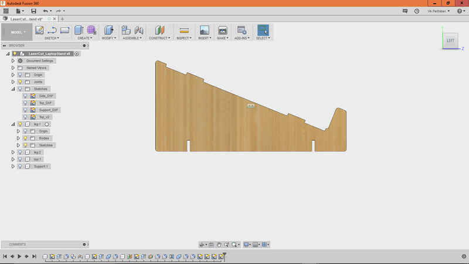
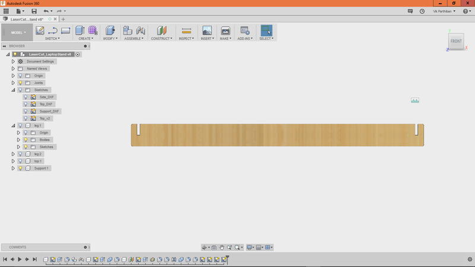
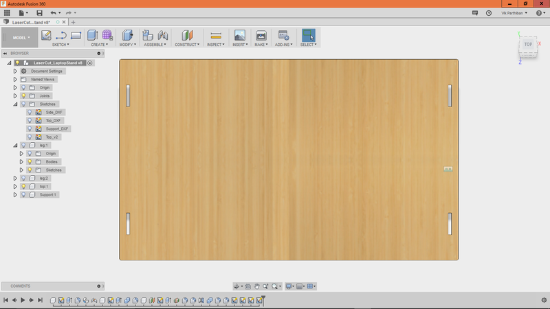
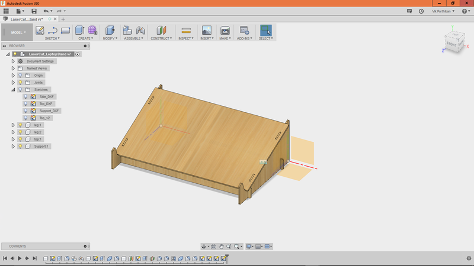
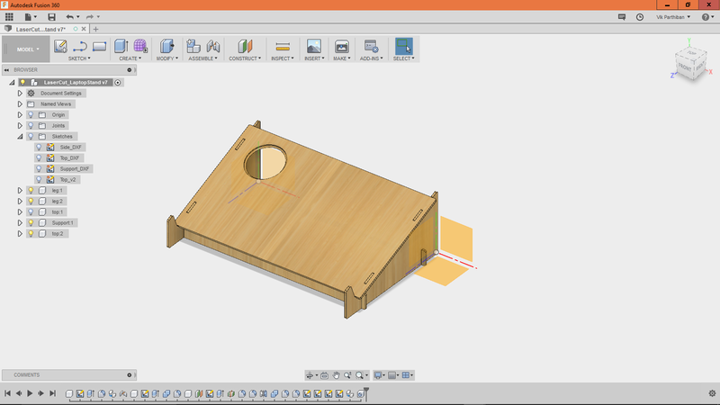
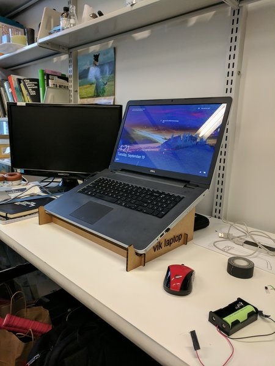
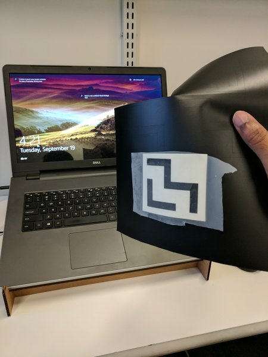
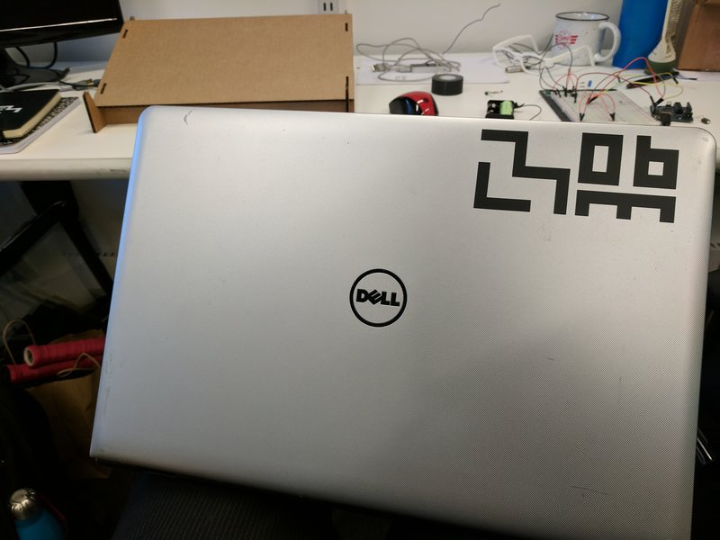

My laptop is large (17") and causes back problems when looking over towards it, so I decided to make a parametrically configured laptop stand. By configuring the LaptopWidth, LaptopHeight, and Thickness, I could print laptop stands for anyone who wanted one. Furthermore, I wanted to make this modular so we could switch out the top piece for more functionality (Desktop, Fan, Heatsink, etc)
I designed the laptop side pieces, support, and top structure in Fusion 360.




For modularity, I designed other tops that fit with the stand for various applications. One would be an insert allow for a heat sink.

In my first iteration I made the notches too large for the cardboard(0.25in) and then reduced them to 0.15in (or 3.9mm).
" WIDTH=450 HEIGHT=600>
After laser cutting, I learned how to do vinyl cutting and made some Media Lab logos.
" WIDTH=450 HEIGHT=600>
" WIDTH=800 HEIGHT=600>
Special thanks and credit to @taylor_stein from AutoDesk Fusion 360 and his tutorial on design, chamfering, mirroring, and many more techniques I learned as a first-time CAD user.